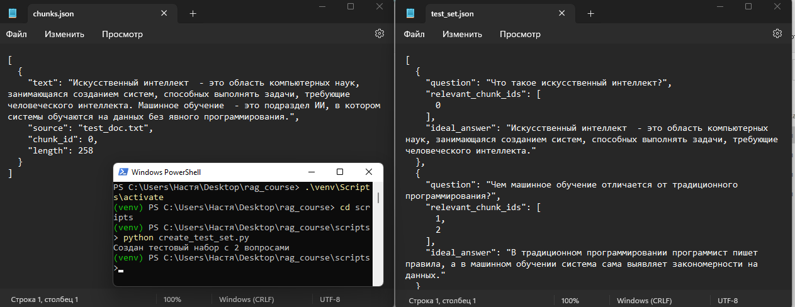
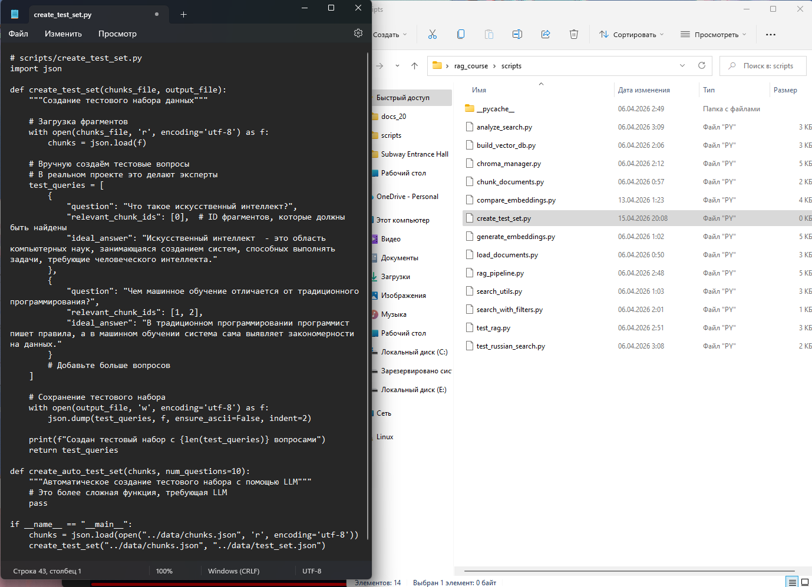
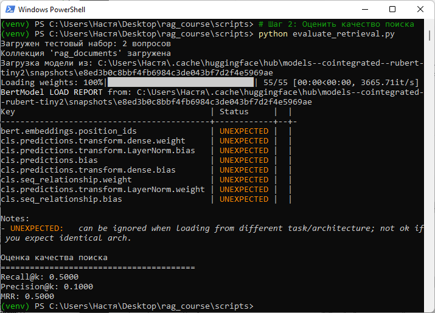
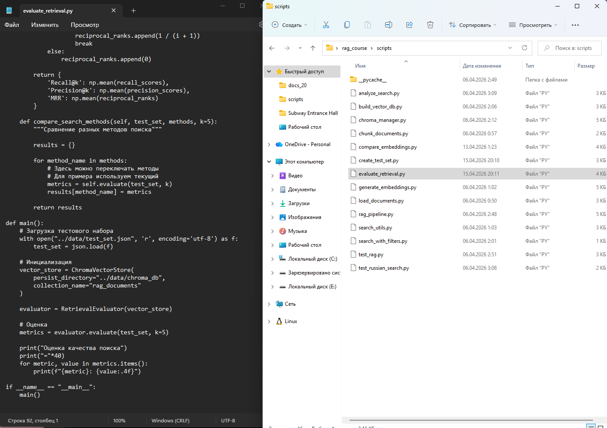
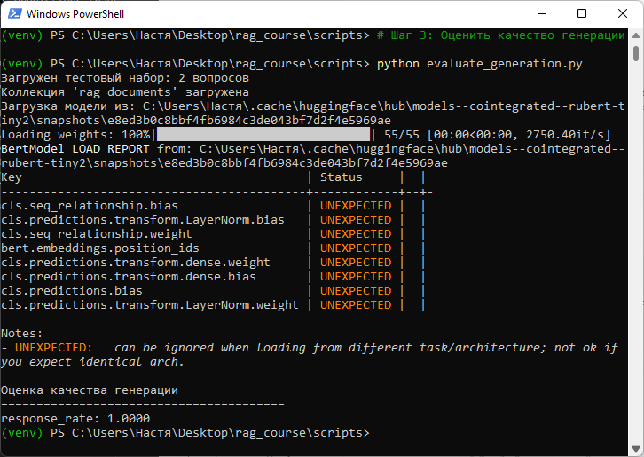
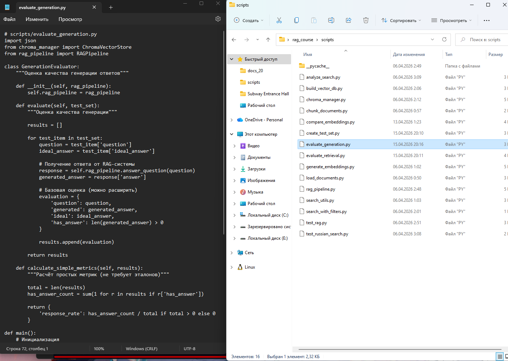

Методическое пособие №6. Оценка качества RAG-системы
Цель занятия
Научиться оценивать качество RAG-системы с помощью автоматических метрик и тестовых наборов
Продолжительность: 4 академических часа
Пошаговая инструкция
Теоретическое введение
Оценка качества RAG-системы включает две группы метрик:
- Метрики поиска - оценивают, насколько хорошо находятся релевантные документы
- Метрики генерации - оценивают качество сгенерированных ответов
Основные метрики поиска:
- Recall@k - доля релевантных документов, попавших в топ-k
- Precision@k - доля релевантных среди топ-k
- MRR - средний обратный ранг первого релевантного документа
Создайте файл scripts/create_test_set.py:
# scripts/create_test_set.py
import jsonИмпортируется библиотека для работы с JSON-файлами, которая позволяет загружать и сохранять данные в формате JSON.
def create_test_set(chunks_file, output_file):
"""Создание тестового набора данных"""
# Загрузка фрагментов
with open(chunks_file, 'r', encoding='utf-8') as f:
chunks = json.load(f)Создаётся функция create_test_set, которая принимает путь к файлу с фрагментами и путь для сохранения тестового набора. Внутри функции загружаются фрагменты из JSON-файла.
# Вручную создаём тестовые вопросы
test_queries = [
{
"question": "Что такое искусственный интеллект?",
"relevant_chunk_ids": [0],
"ideal_answer": "Искусственный интеллект - это область компьютерных наук, занимающаяся созданием систем, способных выполнять задачи, требующие человеческого интеллекта."
},
{
"question": "Чем машинное обучение отличается от традиционного программирования?",
"relevant_chunk_ids": [1, 2],
"ideal_answer": "В традиционном программировании программист пишет правила, а в машинном обучении система сама выявляет закономерности на данных."
}
]Определяется список тестовых вопросов, каждый из которых содержит текст вопроса, ID релевантных фрагментов (которые должны быть найдены при поиске) и эталонный ответ для оценки качества генерации.
# Сохранение тестового набора
with open(output_file, 'w', encoding='utf-8') as f:
json.dump(test_queries, f, ensure_ascii=False, indent=2)
print(f"Создан тестовый набор с {len(test_queries)} вопросами")
return test_queriesТестовый набор сохраняется в JSON-файл с отступами для удобства чтения. Выводится сообщение о количестве созданных вопросов. Функция возвращает созданный тестовый набор.

def create_auto_test_set(chunks, num_questions=10):
"""Автоматическое создание тестового набора с помощью LLM"""
passОпределяется функция-заглушка для автоматического создания тестового набора с помощью языковой модели. Эта функция может быть реализована позже для более продвинутого сценария.
if __name__ == "__main__":
chunks = json.load(open("../data/chunks.json", 'r', encoding='utf-8'))
create_test_set("../data/chunks.json", "../data/test_set.json")Блок проверяет, запущен ли скрипт напрямую. Если да - загружаются фрагменты из файла chunks.json и вызывается функция создания тестового набора, который сохраняется в test_set.json.

Создайте файл scripts/evaluate_retrieval.py:
# scripts/evaluate_retrieval.py
import json
import numpy as np
from chroma_manager import ChromaVectorStoreИмпортируются библиотеки для работы с JSON-файлами, выполнения математических операций с массивами данных, а также класс для работы с векторной базой данных Chroma.
class RetrievalEvaluator:
"""Оценка качества поиска"""
def __init__(self, vector_store):
self.vector_store = vector_storeСоздаётся класс RetrievalEvaluator для оценки качества поиска. В конструкторе сохраняется ссылка на векторное хранилище, которое будет использоваться для выполнения поисковых запросов.
def evaluate(self, test_set, k=5):
"""Оценка поиска на тестовом наборе"""
recall_scores = []
precision_scores = []
reciprocal_ranks = []
for test_item in test_set:
question = test_item['question']
relevant_ids = set(test_item['relevant_chunk_ids'])
# Поиск
results = self.vector_store.search(question, n_results=k)Метод evaluate принимает тестовый набор и параметр k (количество результатов). Инициализируются списки для хранения значений метрик. Для каждого тестового вопроса выполняется поиск в векторной БД.
# Получение ID найденных документов
retrieved_ids = set()
for r in results:
chunk_id = r.get('chunk_id')
if chunk_id is not None:
retrieved_ids.add(chunk_id)Из результатов поиска извлекаются идентификаторы фрагментов (chunk_id) и сохраняются в множество retrieved_ids для дальнейшего сравнения с релевантными ID.
# Recall@k
if len(relevant_ids) > 0:
recall = len(retrieved_ids & relevant_ids) / len(relevant_ids)
recall_scores.append(recall)
# Precision@k
precision = len(retrieved_ids & relevant_ids) / k
precision_scores.append(precision)Вычисляется Recall@k - доля релевантных документов, найденных среди топ-k результатов. Вычисляется Precision@k - доля релевантных документов среди всех топ-k результатов. Результаты добавляются в соответствующие списки.
# MRR (Mean Reciprocal Rank)
found = False
for i, r in enumerate(results):
chunk_id = r.get('chunk_id')
if chunk_id is not None and chunk_id in relevant_ids:
reciprocal_ranks.append(1 / (i + 1))
found = True
break
if not found:
reciprocal_ranks.append(0)
return {
'Recall@k': np.mean(recall_scores) if recall_scores else 0,
'Precision@k': np.mean(precision_scores) if precision_scores else 0,
'MRR': np.mean(reciprocal_ranks) if reciprocal_ranks else 0
}Вычисляется MRR (Mean Reciprocal Rank) - средний обратный ранг первого релевантного документа. Метод возвращает словарь со средними значениями всех трёх метрик.
def main():
# Загрузка тестового набора
try:
with open("../data/test_set.json", 'r', encoding='utf-8') as f:
test_set = json.load(f)
print(f"Загружен тестовый набор: {len(test_set)} вопросов")
except FileNotFoundError:
print("Ошибка: файл ../data/test_set.json не найден")
print("Сначала выполните: python create_test_set.py")
returnВ главной функции выполняется загрузка тестового набора из JSON-файла. Если файл не найден, выводится сообщение об ошибке с инструкцией по созданию тестового набора.
# Инициализация
vector_store = ChromaVectorStore(
persist_directory="../data/chroma_db",
collection_name="rag_documents"
)
evaluator = RetrievalEvaluator(vector_store)
# Оценка
metrics = evaluator.evaluate(test_set, k=5)
print("\nОценка качества поиска")
print("="*40)
for metric, value in metrics.items():
print(f"{metric}: {value:.4f}")
if __name__ == "__main__":
main()Создаётся подключение к векторной базе данных, инициализируется объект RetrievalEvaluator, выполняется оценка качества поиска с параметром k=5. Выводятся результаты всех метрик. Блок if __name__ == "__main__" обеспечивает запуск главной функции.


Создайте файл scripts/evaluate_generation.py:
# scripts/evaluate_generation.py
import json
from chroma_manager import ChromaVectorStore
from rag_pipeline import RAGPipelineИмпортируются библиотека для работы с JSON-файлами, класс для работы с векторной базой данных Chroma и класс RAGPipeline для выполнения поиска и генерации ответов.
class GenerationEvaluator:
"""Оценка качества генерации ответов"""
def __init__(self, rag_pipeline):
self.rag_pipeline = rag_pipelineСоздаётся класс GenerationEvaluator для оценки качества генерации ответов RAG-системы. В конструкторе сохраняется ссылка на RAG-пайплайн, который будет использоваться для получения ответов на вопросы.
def evaluate(self, test_set):
"""Оценка качества генерации"""
results = []
for test_item in test_set:
question = test_item['question']
ideal_answer = test_item['ideal_answer']
response = self.rag_pipeline.answer_question(question)
generated_answer = response['answer']
evaluation = {
'question': question,
'generated': generated_answer,
'ideal': ideal_answer,
'has_answer': len(generated_answer) > 0
}
results.append(evaluation)
return resultsМетод evaluate принимает тестовый набор данных. Для каждого тестового вопроса вызывается RAG-пайплайн для получения ответа. Создаётся словарь с вопросом, сгенерированным ответом, эталонным ответом и флагом наличия ответа.
def calculate_simple_metrics(self, results):
"""Расчёт простых метрик"""
total = len(results)
has_answer_count = sum(1 for r in results if r['has_answer'])
return {
'response_rate': has_answer_count / total if total > 0 else 0
}Метод calculate_simple_metrics вычисляет простые метрики на основе результатов оценки. Рассчитывается response_rate - доля вопросов, получивших ответ.
def main():
# Загрузка тестового набора
try:
with open("../data/test_set.json", 'r', encoding='utf-8') as f:
test_set = json.load(f)
print(f"Загружен тестовый набор: {len(test_set)} вопросов")
except FileNotFoundError:
print("Ошибка: файл ../data/test_set.json не найден")
print("Сначала выполните: python create_test_set.py")
returnВ главной функции выполняется загрузка тестового набора из JSON-файла. Если файл не найден, выводится сообщение об ошибке с инструкцией.
# Инициализация
vector_store = ChromaVectorStore(
persist_directory="../data/chroma_db",
collection_name="rag_documents"
)
rag = RAGPipeline(vector_store, use_local=True, model_name="qwen2.5:3b")
evaluator = GenerationEvaluator(rag)
# Оценка
results = evaluator.evaluate(test_set)
metrics = evaluator.calculate_simple_metrics(results)
print("\nОценка качества генерации")
print("="*40)
for metric, value in metrics.items():
print(f"{metric}: {value:.4f}")
if __name__ == "__main__":
main()Создаётся подключение к векторной базе данных, инициализируется RAG-пайплайн с локальной моделью qwen2.5:3b, создаётся объект GenerationEvaluator. Выполняется оценка качества генерации, вычисляются метрики, и результаты выводятся на экран.


Задание для самостоятельного выполнения
- Расширьте тестовый набор до 15-20 вопросов, размеченных вручную.
- Реализуйте метрику ROUGE-1 для оценки сходства сгенерированного ответа с эталонным.
- Проведите сравнение двух версий RAG-системы (например, с разными моделями эмбеддингов).
- Создайте отчёт в формате JSON со всеми метриками для каждой версии системы.
Контрольные вопросы
- Почему Recall@k важнее Precision@k для RAG-систем?
- Что такое MRR и как он интерпретируется?
- Какие сложности возникают при оценке качества генерации?
- Зачем нужен тестовый набор данных?
- Как можно автоматизировать создание тестового набора?
Критерии оценки
| Критерий | Баллы |
|---|---|
| Создание тестового набора данных | 2 |
| Реализация оценки качества поиска | 2 |
| Расчёт метрик (Recall, Precision, MRR) | 2 |
| Оценка качества генерации | 2 |
| Выполнено дополнительное задание | 2 |
Максимальный балл: 10